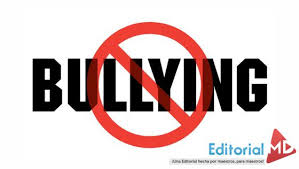
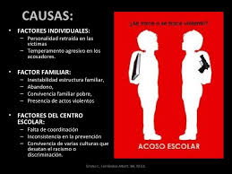

| historia |
La Historia
El fenómeno como tal, seguramente debe haber existido desde el inicio de la era de las escuelas tal y como las conocemos en la actualidad.
Fue durante el siglo XIX que surgió la idea de que los niños, de forma generalizada, debían asistir todos los días a la escuela. En México existen registros de que en el año de 1780 se inicio a gestar lo que hoy conocemos como escuela primaria, es decir, un espacio específico,
con una distribución de tiempo apropiado, con grupos de alumnos de edades similares, con uno o más profesores preparados para ejercer esa actividad y con planes y programas de estudio cíclicos.
Es muy probable que justo desde esas fechas,
al inicio de la etapa escolar de nuestro país, el acoso escolar se manifestara dentro de los recintos donde se recibía el conocimiento. Es muy simple,
el fenómeno se desconocía y ninguna autoridad, bajo las formas de pensar de aquellos años, se interesaba por otra cosa que no fueran los conocimientos académicos, los cuales, por qué no decirlo, se impartían rigurosamente de forma memorística, es decir,
se trataba de aprenderte mecánicamente todas las clases.
Los conflictos entre alumnos eran reprimidos con llamadas de atención o ignorados por considerarse juegos de niños.
De hecho en nuestro país, existía ¿O existe? La creencia de que era saludable dejar a los niños “endurecerse un poco” para que fueran conociendo “la realidad de la vida” y para que fueran aprendiendo a defenderse.
Incluso los maestros de aquellos tiempos acostumbraban castigar actos de indisciplina poniendo motes humillantes, aplicando castigos físicos y dejando en evidencia a los alumnos acusados.
Existe muy poca información al respecto, es probable que nunca sepamos, de forma oficial, desde cuando se empezó a practicar el acoso escolar y tampoco podemos comparar las épocas de esos años con ahora.
Sin embargo, de lo que sí estamos seguros, es que, en caso de existir víctimas de violencia y/o acoso escolar durante esos tiempos, su sufrimiento fue doble al no poder denunciarlo y no saber cómo se llamaba el tipo de agresión que recibía, ni de qué forma podían superarlo.
Siguenos aqui...
|
bullying |
Reconociendo el acoso escolarbr>
Pero las cosas cambiaron en 1970 cuando Dan Olweus, psicólogo noruego, especialista en estudiar la violencia escolar decidió llamar bullying (Acoso escolar) al fenómeno de violencia que existía de forma constante, contra alguien y con intención en el contexto escolar.
Según Olweus, el acoso entre iguales corresponde con una conducta de persecución física y/o psicológica que realiza el alumno o alumna contra otro u otros, a los que elige como víctimas de repetidos ataques.
Esta acción, no debe pasar inadvertida por ser negativa e intencionada, y pone a los agredidos en una situación de la que difícilmente podrán salir por sí mismos. De igual forma, esta situación tendrá una serie de efectos muy negativos: disminución de su autoestima, estados de ansiedad, cuadros depresivos e incluso cuadros de estrés postraumático infantil, que dificultan su evolución e integración a medio plazo en el medio escolar.
Por insignificante que parezca, el simple hecho de ponerle nombre mostró la gravedad del asunto y motivo a muchos especialistas a investigar de forma cercana el fenómeno del acoso escolar, sus causas y sus consecuencias.
Para mas info pulse aqui...
|
| bullying |
El día del acoso escolar o bullying
Desde entonces el interés de muchos por ayduar a quienes eran víctimas de acoso escolar, llegó al grado de que en 2013, el Dr. Javier Miglino, Co-Fundador de la ONG Internacional Bullying Sin Fronteras propuso que debía existir un día especial para conmemorar a las víctimas del acoso escolar y que tomando en cuenta que en las primeras semanas de mayo es cuando más niños van a la escuela en todo el mundo, proponía el 2 de mayo para ser el Día internacional de la lucha contra el acoso escolar.
La propuesta fue aprobada por la UNESCO el día 2 de mayo de 2013 y por más de 3,000 ONG’s en el mundo, en Buenos Aires (Argentina), logrando que el Acoso escolar, obtuviera por primera vez un reconocimiento mundial.
Para mas info pulse aqui...
|
bullying |
Tipos de Bullying
Podemos hablar de varios tipos de acoso escolar que, a menudo, aparecen de forma simultánea:
- Físico: empujones, patadas, agresiones con objetos, etc. Se da con más frecuencia en primaria que en secundaria.
- Verbal: insultos y motes, menosprecios en público, resaltar defectos físicos, etc. Es el más habitual.
- Psicológico: minan la autoestima del individuo y fomentan su sensación de temor.
- Social: pretende aislar al joven del resto del grupo y compañeros.
Para mas info pulse aqui...
|
Bullying |
Características del Bullying
- Suele incluir conductas de diversa naturaleza (burlas, amenazas, agresiones físicas, aislamiento sistemático, etc.).
- Tiende a originar problemas que se repiten y prolongan durante cierto tiempo.
- Suele estar provocado por un alumno, apoyado por un grupo, contra una víctima que se encuentra indefensa.
- Se mantiene debido a la ignorancia o pasividad de las personas que rodean a los agresores y a las víctimas sin intervenir directamente.
- La víctima desarrolla miedo y rechazo al contexto en el que sufre la violencia; pérdida de confianza en sí mismo y en los demás y disminución del rendimiento escolar.
- Disminuye la capacidad de comprensión moral y de empatía del agresor, mientras que se produce un refuerzo de un estilo violento de interacción.
- En las personas que observan la violencia sin hacer nada para evitarla, se produce falta de sensibilidad, apatía e insolidaridad.
- Se reduce la calidad de vida del entorno en el que se produce: dificultad para lograr objetivos y aumento de los problemas y tensiones.
Para mas info pulse aqui...
|
bullying |
¿Qué es el Bullying o acoso escolar?
El bullying es el maltrato físico y/o psicológico deliberado y continuado que recibe un niño por parte de otro u otros, que se comportan con él cruelmente con el objetivo de someterlo y asustarlo, con vistas a obtener algún resultado favorable para los acosadores o simplemente a satisfacer la necesidad de agredir y destruir que éstos suelen presentar.
El bullying implica una repetición continuada de las burlas o las agresiones y puede provocar la exclusión social de la víctima.
Para mas info pulse aqui...
|

Bullying |
Agresores
- Situación social negativa, siendo incluso rechazados por una parte importante de sus compañeros, aunque están menos aislados que las víctimas y tienen algunos amigos que les siguen en su conducta violenta.
- Tendencia a la violencia y al abuso de fuerza. Impulsivos, con escasas habilidades sociales, baja tolerancia a la frustración, dificultad para cumplir normas, relaciones negativas con los adultos y bajo rendimiento.
- Carecen de capacidad de autocrítica, lo que se traduce en una autoestima media o incluso alta.
- Ausencia de una relación afectiva cálida y segura por parte de los padres, sobre todo de la madre. Tiene dificultad para enseñarle a respetar límites y combina la permisividad ante conductas antisociales con el empleo de métodos coercitivos (incluido, en ocasiones, el castigo físico).
- Podría establecerse una división entre agresores activos, que son lo que inician y dirigen la agresión; y agresores pasivos, que son los que les siguen y animan y que presentan problemas similares, aunque en menor grado.
Para mas info pulse aqui...
|

bullying |
Víctima pasiva
- Situación social de aislamiento. Con frecuencia no tiene un solo amigo entre sus compañeros. Presenta dificultad de comunicación y baja popularidad.
- Conducta muy pasiva, miedo ante la violencia y manifestación de vulnerabilidad, alta ansiedad, inseguridad y baja autoestima. Existe una tendencia a culpabilizarse de su situación y a negarla por considerarla vergonzosa.
- Cierta orientación a los adultos, relacionada con una posible sobreprotección por parte de la familia.
Víctima activa
- Situación social de aislamiento e impopularidad.
- Tendencia impulsiva a actuar sin elegir la conducta más adecuada a cada situación. Disponibilidad a emplear conductas agresivas, irritantes, provocadoras. A veces, las víctimas activas mezclan este papel con el de agresores.
- Un rendimiento peor que el de las víctimas pasivas.
- Parecen haber tenido, en su primera infancia, un trato familiar más hostil, abusivo y coercitivo que los otros escolares.
- Situación más frecuente entre los chicos. Pueden encontrarse en ella, con frecuencia, los escolares hiperactivos.
Para mas info pulse aqui...
|
bullying |
Acciones que debes emprender cuando tu hijo es víctima de bullying
Se suele trabajar sobre el bullying cuando el niño ha sufrido más de un ataque y ya tiene secuelas. El principal problema es que los padres tienden a banalizar el hecho. Y lo primero que debemos hacer es darle al asunto la importancia que tiene, sin culpar a la víctima.
Debemos hablar con nuestros hijos, procurando un ambiente de confianza y compañerismo. También, resulta útil acudir al colegio y tratar el tema con el profesor o director. Los docentes pueden supervisar la situación desde otro ángulo y ayudar a determinar lo que sucede.
La actitud de instar a nuestros hijos a devolver la agresión o a no dejarse acosar sin nosotros brindarles un apoyo contundente resulta devastador para ellos. Debemos creer en nuestros hijos, generar una relación de confianza y apoyarlos en situaciones tan difíciles como esta.
Para mas info pulse aqui...
|
bullying |
Tipos de bullying de los que tu hijo puede ser blanco
Las modalidades del acoso escolar han trascendido y mutado conforme avanza la tecnología. De esta manera, se han identificado distintos tipos de bullying, entre los cuales podemos mencionar:
Acoso de baja intensidad
Este tipo de bullying se reduce a insultos verbales, motes, propagación de rumores y humillaciones telefónicas.
Ciberbullying
Es la manera más demoledora de acoso, puesto que no culmina cuando el niño llega a casa. La humillación que recibe se replica en forma masiva, ya que aumenta el número de espectadores.
Acoso social
Este bullying se caracteriza por promover y generar la exclusión del acosado de las actividades colectivas. La víctima se aísla y evita contactar a sus compañeros, incluso evade a sus amigos más cercanos.
Acoso psicológico
Se fundamenta en amenazas relacionadas con un daño físico o la divulgación de alguna información vergonzosa para el acosado, siendo esta última la que más temen las víctimas por encima del daño físico.
Bullying físico
Este tipo acoso es evidente por las agresiones directas. Sucede con mayor regularidad con acosadores de mayor edad o talla física.
Para mas info pulse aqui...
|